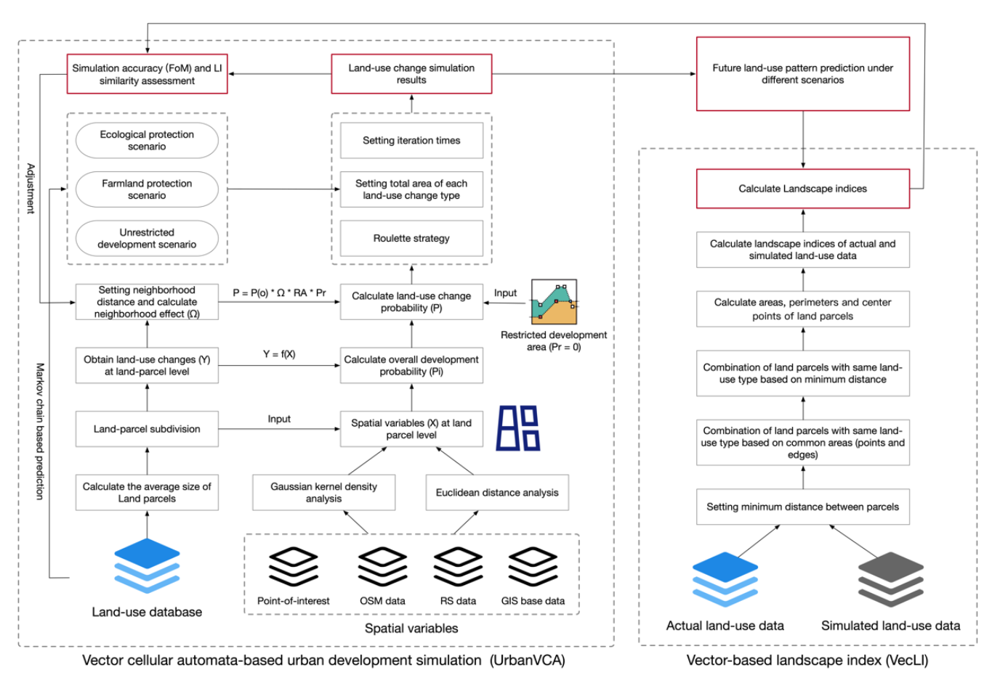
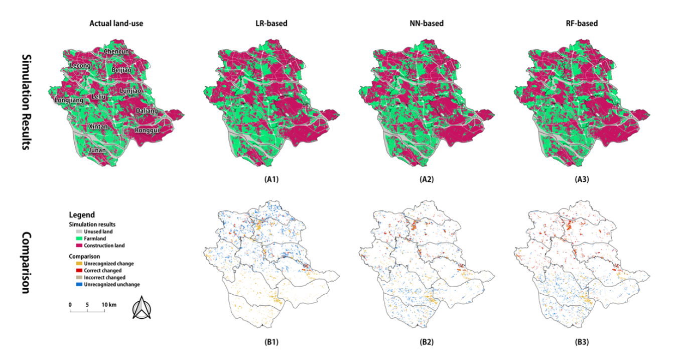
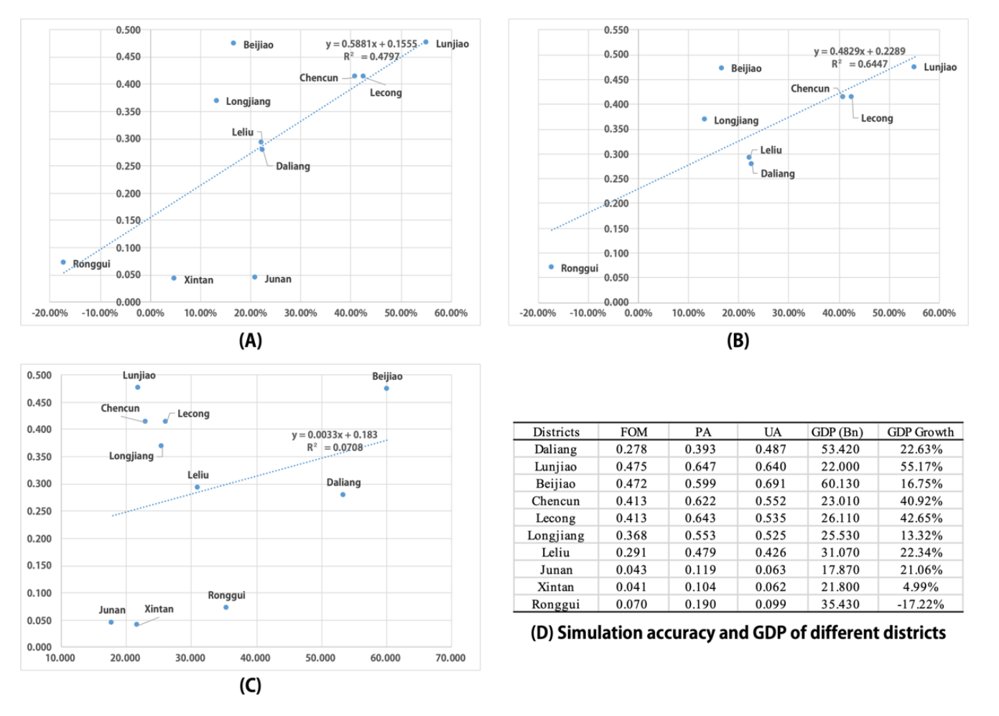
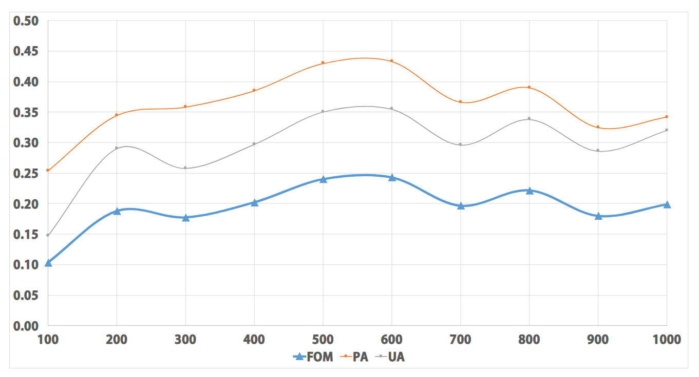
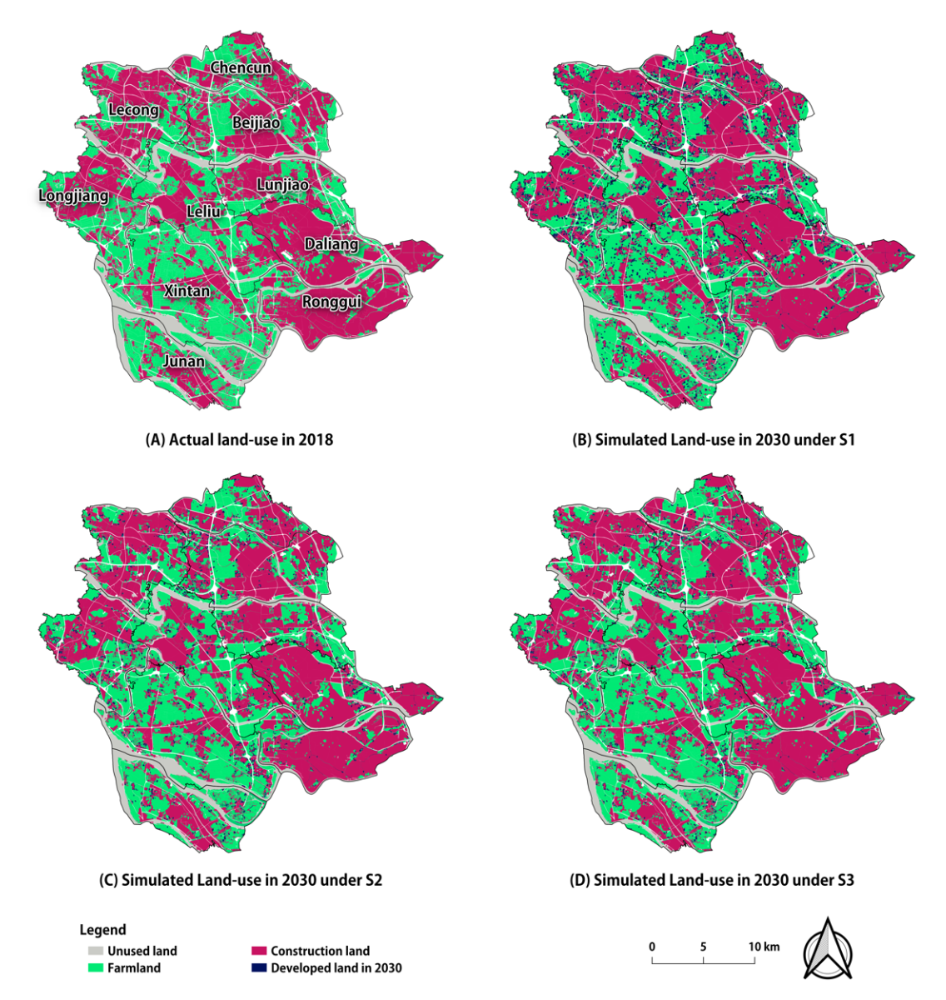

Vector-based cellular automata (CA) based on real land-parcel has become an important trend in current urban development simulation studies. Compared with raster-based and parcel-based CA models, vector CA models are difficult to be widely used because of their complex data structures and technical difficulties. The UrbanVCA, a brand-new vector CA-based urban development simulation framework was proposed in this study, which supports multiple machine-learning models. To measure the simulation accuracy better, this study also first proposes a vector-based landscape index (VecLI) model based on the real land-parcels. Using Shunde, Guangdong as the study area, the UrbanVCA simulates multiple types of urban land-use changes at the land-parcel level have achieved a high accuracy (FoM=0.243) and the landscape index similarity reaches 87.3%. The simulation results in 2030 show that the eco-protection scenario can promote urban agglomeration and reduce ecological aggression and loss of arable land by at least 60%. Besides, we have developed and released UrbanVCA software for urban planners and researchers.
China has experienced rapid urbanization in the past several decades. Cellular automata (CA) models have been widely used in simulating urban expansion and land-use change. Traditional raster-based CA models divide the study area into regular grids, which cannot reflect the real boundaries of land parcels and often result in mixed pixels and boundary inaccuracies.
Vector-based CA models use real land parcels as basic cell units, providing a more realistic representation of urban land-use patterns. However, due to their complex data structures and technical difficulties, vector CA models are difficult to be widely used. The UrbanVCA framework addresses these challenges by providing a comprehensive vector CA-based simulation framework that supports multiple machine-learning models and incorporates a vector-based landscape index for accuracy assessment.
The study area is Shunde District, Foshan, Guangdong Province, China. Shunde has experienced rapid urbanization and is representative of the urban development in the Pearl River Delta region. The land-use data in 2012 and 2018 were used for model calibration and validation.
The proposed model consists of UrbanVCA and VecLI. The construction of UrbanVCA contains four main parts: (1) a subdivision method for obtaining the minimum vector land-parcel as basic cell unit; (2) a CA model for mining the overall development probability and simulating land-use change of vector-based cells; (3) a set of assessment methods for assessing the performance of UrbanVCA, including the proposed VecLI and conventional FoM metric; (4) an application for future land-use pattern prediction under multi-scenarios.

To enable a vector cell lattice, the iterative dichotomy strategy was used to split the plots. The iteration and splitting process continues until the area of each plot is less than the initial state's average area of input plots, thereby obtaining the basic cell unit.
Three machine learning algorithms are provided to calculate the overall development probability for each minimum land-parcel: Logistic Regression (LR), Neural Network (NN), and Random Forest (RF). The neighborhood effect is determined using a centroid-intercepted buffer approach, and the optimal radius value is determined by the best simulation result according to the FoM metric.
To better measure the simulation accuracy at the landscape pattern level, this study first proposes a vector-based landscape index (VecLI) model based on real land-parcels. VecLI computes landscape indices directly from vector data, avoiding the accuracy loss from rasterization.
The UrbanVCA achieves a high simulation accuracy with FoM=0.243 and the landscape index similarity reaches 87.3%. The Random Forest model outperforms Logistic Regression and Neural Network in terms of simulation accuracy.

The correlation between FoM and GDP growth rates, as well as other socio-economic factors, was analyzed to understand the driving forces behind urban land-use change.

The relationship between the neighborhood buffer distance and simulation accuracy was examined to determine the optimal neighborhood radius for the CA model.

The simulation results in 2030 show that the eco-protection scenario can promote urban agglomeration and reduce ecological aggression and loss of arable land by at least 60% compared with the disordered development mode.

This paper proposes the UrbanVCA framework for simulating urban land-use change at the land-parcel level. The main contributions are:
@misc{yao2021urbanvcavectorbasedcellularautomata,
title={UrbanVCA: a vector-based cellular automata framework to simulate the urban land-use change at the land-parcel level},
author={Yao Yao and Linlong Li and Zhaotang Liang and Tao Cheng and Zhenhui Sun and Peng Luo and Qingfeng Guan and Yaqian Zhai and Shihao Kou and Yuyang Cai and Lefei Li and Xinyue Ye},
year={2021},
eprint={2103.08538},
archivePrefix={arXiv},
primaryClass={cs.CY},
url={https://arxiv.org/abs/2103.08538},
}